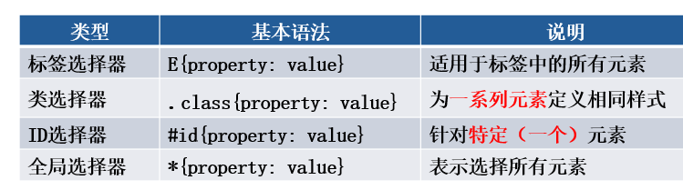
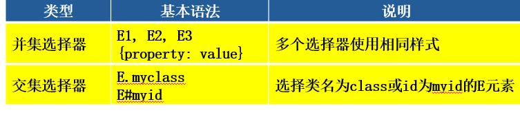

1. CSS概述2. CSS基础语法3. CSS调用方式3.1 直接在元素后面书写样式参数3.2统一在<head></head>内建立样式表3.3 导入外部样式文件3.4 链接方式4. CSS选择器4.1 元素选择器4.2 类选择器4.3 ID选择器4.4 通用选择器4.5 伪类选择器4.6 伪元素选择器4.7 元素中复合选择器（交集，并集，属性，后代，子元素，相邻兄弟等）4.8 元素状态选择器（与作用在元素上的动作有关）4.9 伪对象选择器5. 属性选择器
Css（cascading style sheet层叠样式表），用于修饰页面，能高效，统一外观，且可以重复使用。 相当于把某个样式的参数模块化，可用于一个网页同不同控件，也可以跨网页使用。如定义一个专门 控制表格样式的表，可以用在本网站所有需要的地方。
CSS的意思就是层叠样式表，所谓层叠可以被理解为覆盖的意思，是CSS中样式冲突的一种解决方法。
优先级关系：ID选择器>类选择器>标签选择器
先通过这个例子，先了解一下本章主要内容，初步认识一下各种选择器的概念
xxxxxxxxxx<html> <head> <meta charset="utf-8" /> <title>文字网页</title> <style>/* 通用选择器 */ *{color: rgb(185,0,0);}/* 类class选择器 */ .my1{font-size: larger; }/* 元素选择器 */ div{font-size: 28px;}/* id选择器 */ #div2{font-size: 10px;}/* 伪类选择器 */ a:link{color: blue;text-decoration: none;} a:visited{color: black;} a:hover{color: aquamarine;} /* 伪元素选择器 */ p:first-letter{font-size: 25px;} </style></head> <body> <h2>唐诗欣赏</h2> <hr id="hr1"> <p class="my1"> 静夜思 </p> <p class="para">李白<br/><br/> <b> 床前明月光，<br/> 疑是地上霜。<br/> 举头望明月，<br/> 低头思故乡。<br/> </b> </p> <hr width="100%" size="1" color="#00ffee"/> <p style="text-align:left"> <b>【简析】</b>这是写远客思乡之情的诗，诗以明白如话的语言雕琢出明静醉人的秋夜的意境。 </p> <hr width="400" size="3" color="#00ee99" align="left"/><div id="div1">这是第1个div层</div><div id="div2">这是第2个div层</div><br><a href="http://www.baidu.com">百度</a></body></html>格式： 选择器{ 属性:属性值;…… }
html中注释：选中要注释的内容，按ctrl+/
说明：CSS应用的三种方法
直接使用style=” ”，如
<p style="font-size:17px;">
<head></head>内建立样式表在首部定义<style> 使用选择器对元素控制</style>
上面的例子就是
实现不同网页可通用，定义独立的CSS文件，需要时import载入;养成一个习惯，建立一个专门存放CSS文件的文件夹”CSS”,再建立样式文件，在要使用的页面前导入：
如： <style type="text/css">
@import url("css/my1.css");
</style>
新建css文件：my2.css，内容为：
.mycss1{font-size: 12px;color: rgb(180,0,20);}
引用：
<link rel="stylesheet" href="css/my2.css/">
注： 3.3（导入） 和 3.4（链接） 的区别： import在HTML文件初始化时被导入到文件中，作为文件的一部分；而后者是在HTML标记需要样式风格时才以链接方式引入。显然，后者可加快页面的初始化。
建议：不要把一个单独的CSS定义内容太多，分类定义成不同的CSS文件；如果一个CSS文件内容太多，最好使用link。 注：这几种方式的优先级别，自己实验和体会

是最常用的，这种方法常用于控制网页中所有相同元素的显示效果
p { color:#ff0000; } 可以让网页中所有的<p>标签内容全部为红色文字
input {
background-color:#aa0000;
color:#00bb00;
width:inherit;
}
可以让所有input类对象呈以上格式
注：常用的元素类型：<p> <hr> <div> <input> <select> <h1 > <table> <tr> <td>
可能把相同类型元素中指定不同的class，从而针对不同class的对象设置不同风格 例1：
xxxxxxxxxx<style>.c1 { color: #FFAA00; }.c2 { color: #00ff00; }</style>
<p class="c1">中国人民</p><p class="c2">亚洲人民</p><p class="c1">非洲人民</p>这个东西是针对指定ID的对象的格式设置，用得少,不如直接在内容中处理了而不需要单独建立CSS 格式：#ID{ } 例：
xxxxxxxxxx<style>#Select1{ font-size:30px;background-color:red; }</style> <select id="Select1" name="D1"> <option value="1" selected="selected">研究生</option> <option value="2" >本科生</option> <option value="3" >专科生</option> </select>用于对所有元素统一格式，如网页所有文字都统一字号和颜色：
xxxxxxxxxx* { color: #77aa00;font-size: larger;}
在某个事件动作发生时，用于向某些选择器添加特殊的效果，如控制链接的不同状态颜色
xxxxxxxxxxa:link { color: #00bb00; }a:visited { color: #808080; }a:hover { color: #77aa00; }input:focus { background-color: #00AA00; }
注：伪类选择器作用在某类控件的一个动作发生时的CSS控制。
如上面的input:focus { background-color: #00AA00; }
修改为: .focus { background-color: #00AA00; } 想一下成了什么效果？（是不是成立类选择器了？只要元素的class 属性值为focus 都具体有此应用----所以这变是伪类选择器的名称由来）
xxxxxxxxxxp.pc1:{ }p.pc1:after { content: url("images/1.png"); }
把所有<p class=”pc1”>的段最后加一个图片（注意，当行处理，不能改变图片的大小）。如果把上面修改为:
p:after { content: url("images/1.png"); }页面中所有段落后面都加了一个图片了.
Content:后可以加文字，可加图片 p.pc1::after{content: "（**）";}
还有，如果要对一个段落的最前面字大加字号,可以使用：
p:first-letter { font-size:30px;}
也可以把需要设置的段落的首字加一个<span> 首字</span>再使用CSS：
span { font-size:30px;}
大家仔细理解以上为什么效果一样？这就是所谓的伪元素概念---“伪”。元素选择器与伪元素选择器能达到相同的效果。

这类选择器在复杂情况下往往结果JS编程，动态触发, 针对某元素处于某个状态时才有作用，如前面我们针对超链接定义的样式。
| 选择器 | 说明 |
|---|---|
| E:first-letter | 设置对象内的第一个字符的样式。 |
| E:first-line | 设置对象内的第一行的样式。 |
| E::selection | 设置对象被选择时的颜色。 |
| E:before | 设置在对象前（依据对象树的逻辑结构）发生的内容。用来和content属性一起使用 |
| E:after | 设置在对象后（依据对象树的逻辑结构）发生的内容。用来和content属性一起使用 |
| 选择器 | 说明 |
|---|---|
| E[att] | 选择具有att属性的E元素。 |
| E[att="val"] | 选择具有att属性且属性值等于val的E元素。 |
| E[att^="val"] | 选择具有att属性且属性值为以val开头的字符串的E元素。 |
| E[att$="val"] | 选择具有att属性且属性值为以val结尾的字符串的E元素。 |
| E[att*="val"] | 选择具有att属性且属性值为包含val的字符串的E元素。 |
| E[att~="val"] | 选择具有att属性且属性值为一用空格分隔的字词列表，其中一个等于val的E元素。 |
| E[att|="val"] | 选择具有att属性且属性值为以val开头并用连接符"-"分隔的字符串的E元素。 |